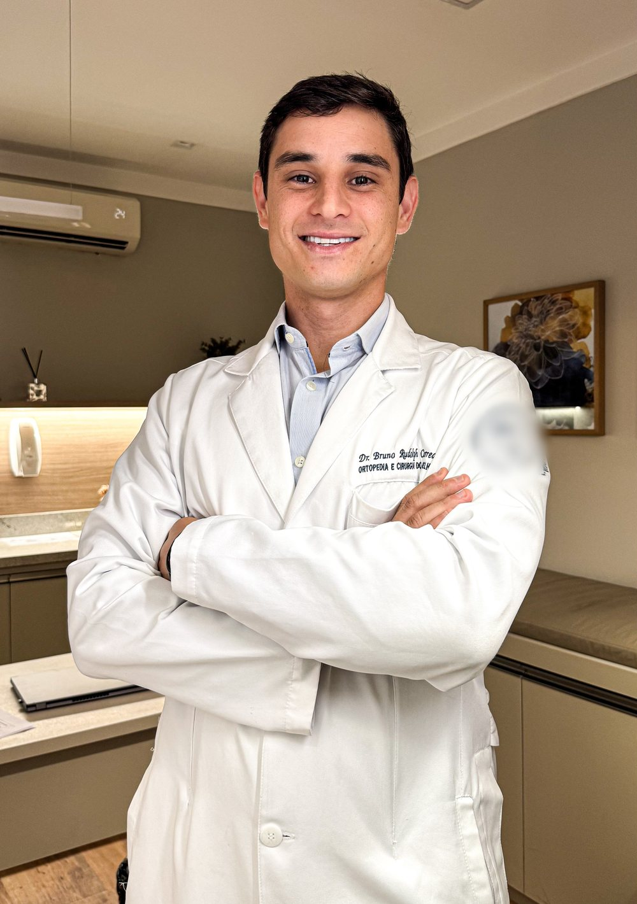
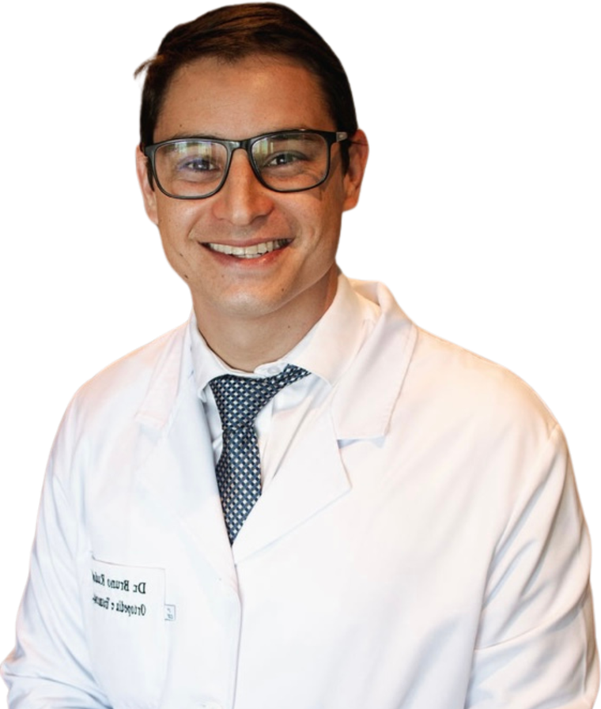

Ortopedia · Esporte · Saúde
Ortopedia · Esporte · Saúde
Dr. Bruno Rudolph
Ortopedia, joelho e esporte em Salvador — do joelho que dói no dia a dia à volta ao treino.
Ortopedista e traumatologista, com residência e R4 em cirurgia do joelho na Santa Casa de Belo Horizonte e pós-graduação em medicina do esporte. Consultório no Horto Offices, Horto Florestal.

Por onde começar
O que está tirando você do ritmo?
Escolha o assunto e leia no seu tempo. Cada página explica o que costuma ser avaliado, como é a consulta e quando não vale esperar. A indicação é individual, definida em consulta.
Dói para subir escada, agachar ou andar
Dor que vem e volta, inchaço repetido, artrose.
Dor no joelho e artrose Lesão no esporteTorci o joelho jogando
Ligamento, menisco, estalo, joelho que falseia ou trava.
Ligamento e menisco CartilagemDor na frente do joelho
Condromalácia, desgaste, inchaço e sensação de falseio.
Cartilagem PrevençãoQuero treinar com segurança
Corrida, academia, triatlo: carga, sinais de alerta e retorno.
Esporte e prevençãoO joelho em 4 perguntas
Quatro situações, nas palavras dele.
Na página dele, o Dr. Bruno descreve as quatro situações que mais aparecem no consultório. Qual delas parece com a sua? A resposta certa vem do exame — ver a página dele.
Joelho esquemático: 1 cartilagem e desgaste · 2 ligamentos · 3 meniscos · 4 frente do joelho
“É um desgaste crônico da cartilagem do joelho. Está associado a dores frequentes, inchaços repetitivos, além de limitações para agachar, andar e fazer atividades do dia a dia.”
Ler a página“Geralmente ocorrem durante prática esportiva ou acidentes com impacto no joelho. O tratamento pode ser com ou sem cirurgia.”
Ler a página“Pode ocorrer de forma aguda durante prática esportiva ou por desgaste ao longo do tempo. Cada tipo de lesão tem um tratamento mais adequado.”
Ler a página“Condromalácia, fissuras, erosões e desgaste que geralmente cursam com dor, inchaço e sensação de falseio.”
Ler a páginaDo consultório ao retorno ao esporte
Cinco parciais, no seu ritmo.
“O tratamento é sempre individualizado, podendo ser por meio de procedimentos minimamente invasivos, infiltrações, bloqueios, artroscopia e cirurgia.” Página do Dr. Bruno (drbrunorudolph.com.br, 2025) · ver a fonte
- 01Conversa
Onde dói, como começou, o que piora. Esporte, treino, trabalho e rotina entram na conversa.
- 02Exame físico
O joelho examinado com calma: movimento, estabilidade, pontos de dor, comparando com o outro lado.
- 03Exames, se precisar
Radiografia, ressonância ou ultrassom quando ajudam a decidir — e os resultados explicados.
- 04O plano
“Desde o tratamento clínico até o cirúrgico”: fortalecimento, ajuste de carga, procedimentos, artroscopia ou cirurgia, conforme o caso.
- 05Retorno progressivo
A volta à atividade por etapas, com reavaliação. O ritmo é definido caso a caso, sem prazo prometido.
Trauma com deformidade, não conseguir apoiar o pé no chão ou febre com a articulação inchada? Não espere a consulta: procure o pronto-socorro mais próximo ou o SAMU (192). O consultório atende com hora marcada e não é serviço de urgência.
Trajetória
Da Santa Casa de BH a Salvador.
Formação declarada pelo Dr. Bruno; datas da residência e da chegada à Bahia no histórico público do CNES.
- 2016Medicina · Multivix
Graduação em Vitória (ES).
formação declarada - 2018–2020Residência em Ortopedia e Traumatologia
Santa Casa de Belo Horizonte; residente no CNES desde novembro de 2018.
declarada · CNES - 2022R4 em Cirurgia do Joelho
Especialização (R4) na Santa Casa de Belo Horizonte.
formação declarada - PósMedicina do esporte
Pós-graduações em medicina do esporte e em nutrição e fisiologia do exercício.
formação declarada - 2022 →Salvador
Primeiro vínculo na Bahia em junho de 2022; hoje, consultório no Horto Offices.
CNES · Google

Nas palavras dele
“A ideia é transbordar amor e conhecimento. Amor pela vida e conhecimento que permita vivê-la de forma plena.”Site antigo do Dr. Bruno, “sobre mim” (2021) · ver a fonte
“Sou apaixonado por esporte e pela natureza. Hoje sou triatleta amador, mas já fui sedentário e sobrepeso, com uma rotina extremamente estressante.”
Site antigo do Dr. Bruno, “sobre mim” (2021) · ver a fonte“Trabalho com tratamento e prevenção de dores articulares e também de lesões esportivas. […] O atendimento é individualizado, prezando sempre pela qualidade e respeito.”
Apresentação do Dr. Bruno no perfil de agendamento · ver a fonteAvaliações no Google
O que os pacientes contam.
36 avaliações na ficha pública · trechos com nome abreviado
O Dr. Bruno foi muito atencioso, esclareceu todas as minhas dúvidas com clareza e me passou muita segurança durante todo o atendimento.
Minha primeira consulta com o Bruno foi excelente, me explicou detalhadamente os resultados dos exames que apresentei e condutas.
Maravilhoso e atencioso. Poucos médicos hoje em dia são assim.
Dr. Bruno e sua equipe atenciosa e agradável. Atendem com excelência.
Excelente profissional, e com a paz que todo paciente na angústia precisa receber de um profissional.
Conteúdos
Para ler e conferir.
Os perfis públicos de onde vêm os fatos deste site e as páginas para ler antes da consulta.
O perfil do Dr. Bruno, com mais de 300 publicações.
Abrir ↗GoogleNota 5,0 · 36 avaliaçõesA ficha pública do consultório, com endereço e avaliações.
Abrir ↗CNES · Ministério da SaúdeHistórico profissionalDa residência em Belo Horizonte aos vínculos atuais em Salvador.
Abrir ↗No siteComo é a consultaConversa, exame físico, exames e plano — o que levar no dia.
Ler no site →No siteEsporte e prevençãoTreino, carga e sinais de que é hora de parar e avaliar.
Ler no site →No siteSobre o Dr. BrunoA formação em Belo Horizonte e a chegada a Salvador.
Ler no site →Consultório
Horto Offices, sala 404.
Na R. Waldemar Falcão, no Horto Florestal, em Salvador — o endereço da ficha do Google.
R. Waldemar Falcão, 979 · Horto Florestal · Salvador – BA
Como chegarConfirme o dia, o horário e o seu plano com a equipe pelo WhatsApp (71) 98131-8228.
Dúvidas frequentes
Perguntas comuns
O Dr. Bruno atende lesões do esporte?
Sim. Ele é ortopedista e traumatologista (RQE 21812), com residência e R4 em cirurgia do joelho na Santa Casa de Belo Horizonte e pós-graduação em medicina do esporte. Atua em dores no joelho e lesões esportivas.
Preciso ser atleta para consultar?
Não. Ele atende quem tem dor no joelho no dia a dia — para subir escada, agachar, andar — e também quem pratica atividade física, do iniciante ao atleta amador.
Toda lesão no joelho precisa de cirurgia?
Não. Como ele mesmo escreve, o tratamento vai “desde o tratamento clínico até o cirúrgico”, e muitas lesões são tratadas sem cirurgia. A indicação é individual, definida em consulta.
Devo levar exames?
Sim: leve radiografias, ressonâncias e laudos que já tiver, mesmo antigos. Veja como é a consulta.
Atende plano de saúde?
A página do Dr. Bruno de 2025 informava atendimento por planos de saúde. A lista pode ter mudado: confirme com a equipe quais planos são aceitos hoje.
Qual é o horário?
Atendimento com hora marcada — confirme o dia e o horário com a equipe pelo WhatsApp.
Agende
Joelho doendo ou lesão no esporte? Comece pela conversa.
Consulta com hora marcada no Horto Offices, Horto Florestal, Salvador. Fale pelo WhatsApp (71) 98131-8228.